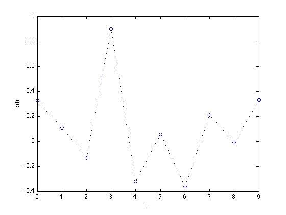
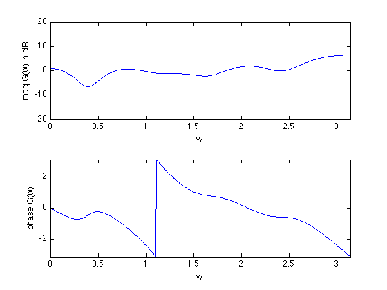
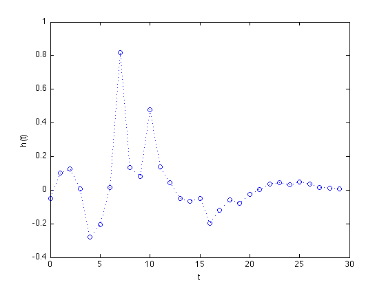
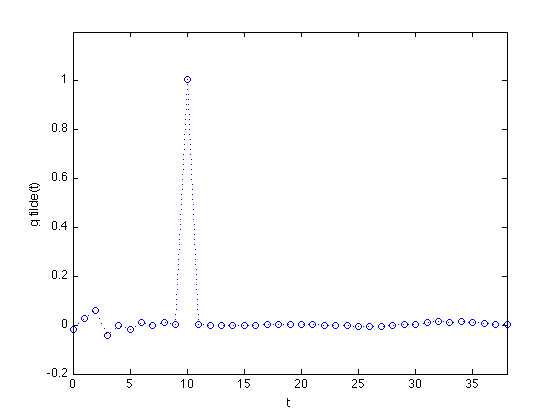
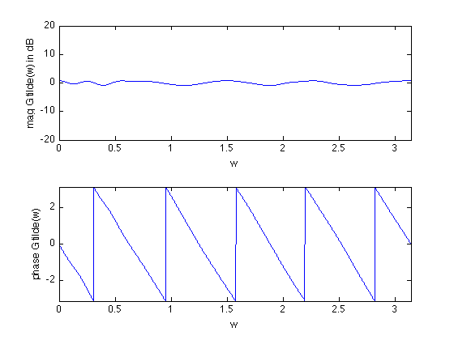
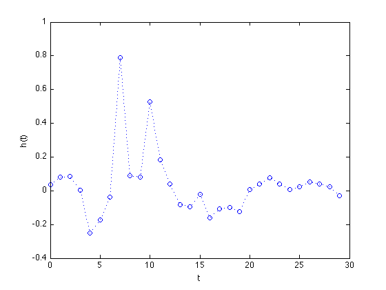
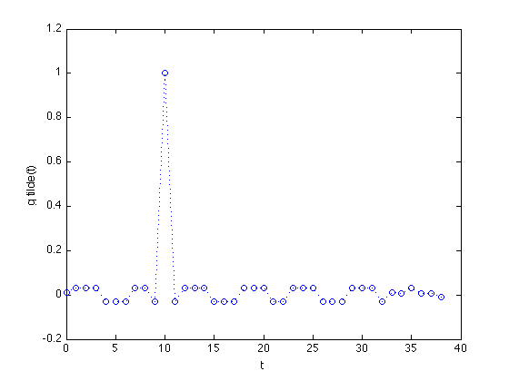
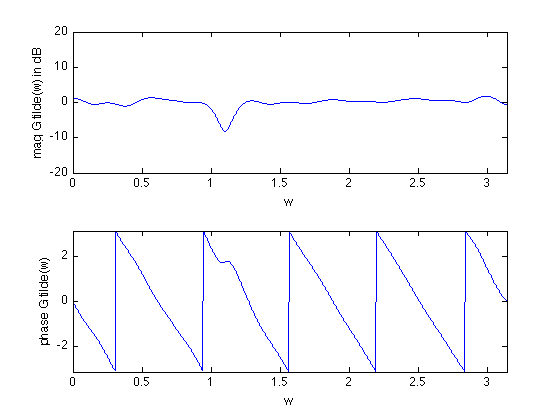

Equalizer design example
g =.5*[ 0.6526; 0.2157; -0.2639; 1.8024; -0.6430; ...
0.1096; -0.7190; 0.4206; -0.0193; 0.6603;];
n = 30;
D = 10;
m = 15*(length(g) + n);
w = linspace(0,pi,m)';
G = exp( -j*kron(w,[0:length(g)-1]) )*g;
A = exp( -j*kron(w,[0:n-1]) );
Gdes = exp(-j*D*w);
cvx_begin
variable hf(n,1)
minimize( max( abs( G.*(A*hf) - Gdes ) ) )
cvx_end
disp(['Frequency equalization problem is ' cvx_status])
if ~strfind(cvx_status,'Solved')
return
end
Tconv = toeplitz([g; zeros(n-1,1)],[g(1) zeros(1,n-1)]);
times_not_D = [1:D D+2:size(Tconv,1)];
cvx_begin
variable t
variable ht(n,1)
minimize( max( abs( Tconv(times_not_D,:)*ht ) ) )
subject to
Tconv(D+1,:)*ht == 1;
cvx_end
if ~strfind(cvx_status,'Solved')
disp(['Frequency equalization problem is ' cvx_status])
return
end
figure(1)
plot([0:length(g)-1],g,'o',[0:length(g)-1],g,'b:')
xlabel('t')
ylabel('g(t)')
figure(2)
H = exp(-j*kron(w,[0:length(g)-1]))*g;
subplot(2,1,1);
plot(w,20*log10(abs(H)))
axis([0,pi,-20,20])
xlabel('w')
ylabel('mag G(w) in dB')
subplot(2,1,2)
plot(w,angle(H))
axis([0,pi,-pi,pi])
xlabel('w')
ylabel('phase G(w)')
figure(3)
plot([0:n-1],hf,'o',[0:n-1],hf,'b:')
xlabel('t')
ylabel('h(t)')
figure(4)
gt=conv(g,hf);
plot([1:length(gt)]-1,gt,'o',[1:length(gt)]-1,gt,'b:')
xlabel('t')
ylabel('g tilde(t)')
axis([0,length(gt)-1,-.2 1.2])
figure(5)
H = exp(-j*kron(w,[0:length(gt)-1]))*gt;
subplot(2,1,1)
plot(w,20*log10(abs(H)))
axis([0,pi,-20,20])
xlabel('w')
ylabel('mag G tilde(w) in dB')
subplot(2,1,2)
plot(w,angle(H))
axis([0,pi,-pi,pi])
xlabel('w')
ylabel('phase G tilde(w)')
figure(6)
plot([0:n-1],ht,'o',[0:n-1],ht,'b:')
xlabel('t')
ylabel('h(t)')
figure(7)
gt=conv(g,ht);
plot([1:length(gt)]-1,gt,'o',[1:length(gt)]-1,gt,'b:')
xlabel('t')
ylabel('g tilde(t)')
figure(8)
H = exp(-j*kron(w,[0:length(gt)-1]))*gt;
subplot(2,1,1)
plot(w,20*log10(abs(H)))
axis([0,pi,-20,20])
xlabel('w')
ylabel('mag G tilde(w) in dB')
subplot(2,1,2)
plot(w,angle(H))
axis([0,pi,-pi,pi])
xlabel('w')
ylabel('phase G tilde(w)')
Calling sedumi: 1799 variables, 31 equality constraints
For improved efficiency, sedumi is solving the dual problem.
------------------------------------------------------------
SeDuMi 1.21 by AdvOL, 2005-2008 and Jos F. Sturm, 1998-2003.
Alg = 2: xz-corrector, Adaptive Step-Differentiation, theta = 0.250, beta = 0.500
eqs m = 31, order n = 1201, dim = 1800, blocks = 601
nnz(A) = 36555 + 0, nnz(ADA) = 961, nnz(L) = 496
it : b*y gap delta rate t/tP* t/tD* feas cg cg prec
0 : 6.04E+02 0.000
1 : -1.47E+00 2.15E+02 0.000 0.3565 0.9000 0.9000 0.93 1 1 4.9E+02
2 : -5.71E-01 4.10E+01 0.000 0.1906 0.9000 0.9000 3.75 1 1 2.5E+01
3 : -1.46E-01 1.17E+01 0.000 0.2855 0.9000 0.9000 5.37 1 1 1.8E+00
4 : -1.10E-01 4.12E+00 0.000 0.3520 0.9000 0.9000 1.80 1 1 4.7E-01
5 : -1.00E-01 1.59E+00 0.000 0.3865 0.9000 0.9000 1.27 1 1 1.7E-01
6 : -9.72E-02 5.60E-01 0.000 0.3515 0.9000 0.9000 1.10 1 1 5.6E-02
7 : -9.66E-02 1.90E-01 0.000 0.3391 0.9000 0.9000 1.03 1 1 1.9E-02
8 : -9.66E-02 7.15E-02 0.000 0.3768 0.9000 0.0000 1.01 1 1 8.2E-03
9 : -9.66E-02 2.13E-02 0.000 0.2974 0.9000 0.0000 1.00 1 1 3.2E-03
10 : -9.65E-02 6.92E-03 0.000 0.3250 0.9061 0.9000 1.00 1 1 1.1E-03
11 : -9.64E-02 1.36E-03 0.000 0.1967 0.9196 0.9000 1.00 1 1 2.5E-04
12 : -9.64E-02 4.36E-04 0.000 0.3201 0.9118 0.9000 1.00 1 1 8.5E-05
13 : -9.64E-02 1.39E-04 0.000 0.3185 0.9212 0.9000 1.00 1 1 2.9E-05
14 : -9.64E-02 4.67E-05 0.000 0.3363 0.9000 0.0000 1.00 1 1 1.2E-05
15 : -9.64E-02 8.11E-06 0.000 0.1737 0.9062 0.9000 1.00 1 1 2.3E-06
16 : -9.64E-02 1.68E-06 0.000 0.2071 0.9249 0.9000 1.00 1 1 5.7E-07
17 : -9.64E-02 7.49E-07 0.000 0.4464 0.9078 0.9000 1.00 1 1 2.6E-07
18 : -9.64E-02 2.00E-07 0.000 0.2664 0.9300 0.9000 1.00 1 1 8.4E-08
19 : -9.64E-02 6.74E-08 0.000 0.3375 0.9328 0.9000 1.00 1 2 3.4E-08
20 : -9.64E-02 2.77E-08 0.000 0.4107 0.9267 0.9000 1.00 1 2 1.5E-08
iter seconds digits c*x b*y
20 0.2 Inf -9.6426276452e-02 -9.6426274874e-02
|Ax-b| = 6.7e-09, [Ay-c]_+ = 7.2E-09, |x|= 3.6e-01, |y|= 1.1e+00
Detailed timing (sec)
Pre IPM Post
3.000E-02 1.800E-01 0.000E+00
Max-norms: ||b||=1, ||c|| = 1,
Cholesky |add|=0, |skip| = 0, ||L.L|| = 215.953.
------------------------------------------------------------
Status: Solved
Optimal value (cvx_optval): +0.0964263
Frequency equalization problem is Solved
Calling sedumi: 77 variables, 31 equality constraints
For improved efficiency, sedumi is solving the dual problem.
------------------------------------------------------------
SeDuMi 1.21 by AdvOL, 2005-2008 and Jos F. Sturm, 1998-2003.
Alg = 2: xz-corrector, Adaptive Step-Differentiation, theta = 0.250, beta = 0.500
eqs m = 31, order n = 79, dim = 79, blocks = 40
nnz(A) = 338 + 0, nnz(ADA) = 541, nnz(L) = 289
it : b*y gap delta rate t/tP* t/tD* feas cg cg prec
0 : 4.06E+01 0.000
1 : -7.31E-01 1.88E+01 0.000 0.4630 0.9000 0.9000 2.39 1 1 2.6E+01
2 : -4.35E-02 9.16E+00 0.000 0.4872 0.9000 0.9000 11.37 1 1 1.2E+00
3 : -3.19E-02 6.13E+00 0.000 0.6688 0.9000 0.9000 2.83 1 1 6.7E-01
4 : -3.46E-02 2.91E+00 0.000 0.4744 0.9000 0.9000 1.65 1 1 3.0E-01
5 : -3.28E-02 7.84E-01 0.000 0.2695 0.9000 0.9000 1.26 1 1 7.5E-02
6 : -3.19E-02 2.07E-01 0.000 0.2638 0.9000 0.9000 1.06 1 1 1.9E-02
7 : -3.17E-02 5.21E-02 0.000 0.2519 0.9000 0.9000 1.02 1 1 4.8E-03
8 : -3.16E-02 1.13E-02 0.000 0.2161 0.9001 0.9000 1.00 1 1 1.0E-03
9 : -3.16E-02 8.83E-04 0.000 0.0784 0.9000 0.0000 1.00 1 1 2.3E-04
10 : -3.16E-02 5.54E-05 0.000 0.0628 0.9165 0.9000 1.00 1 1 2.8E-05
11 : -3.16E-02 1.26E-06 0.000 0.0227 0.9908 0.9900 1.00 1 1 1.1E-06
12 : -3.16E-02 7.70E-08 0.000 0.0611 0.9900 0.9902 1.00 1 1 6.3E-08
13 : -3.16E-02 7.72E-12 0.274 0.0001 0.9999 0.9999 1.00 1 1 6.3E-12
iter seconds digits c*x b*y
13 0.1 10.3 -3.1625048702e-02 -3.1625048703e-02
|Ax-b| = 1.5e-12, [Ay-c]_+ = 1.9E-12, |x|= 7.8e-01, |y|= 1.1e+00
Detailed timing (sec)
Pre IPM Post
1.000E-02 6.000E-02 0.000E+00
Max-norms: ||b||=1, ||c|| = 1,
Cholesky |add|=0, |skip| = 0, ||L.L|| = 5.56625.
------------------------------------------------------------
Status: Solved
Optimal value (cvx_optval): +0.031625
       